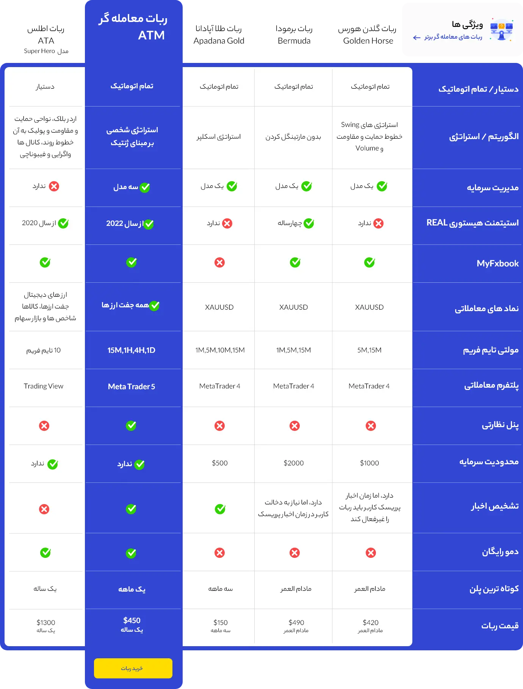

<!-- <h1 class="sr-only">اکسپرت (ربات خودکار) چیست؟ بهترین ربات ترید 2024</h1> -->
<div class="m-0 lg:px-4 py-5">
  <div class="flex flex-col m-3 lg:pr-6">
    <div class="flex min-h-[201px] max-h-[201px]">
      <div class="w-full" [ngClass]="choosenSlide == 1 ? '' : 'hidden'">
        <a
          target="_blank"
          class="w-full flex justify-center"
          routerLink="../about-us"
          [queryParams]="{ counselling: 'true' }"
        >
          
        </a>
        <!-- <app-discount-banner [response]="true"></app-discount-banner>
          <div
            class="absolute w-full h-full z-10 bg-transparent translate-x-[50%] translate-y-[-50%] top-[50%] right-[50%]"
          ></div> -->
      </div>
      <!-- </div> -->
      <div class="w-full" [ngClass]="choosenSlide == 2 ? '' : 'hidden'">
        <a
          [routerLink]="'../brokers'"
          target="_blank"
          class="w-full flex justify-center"
        >
          
        </a>
      </div>
    </div>
    <app-slider
      class="md:hidden"
      [choosenSlide]="choosenSlide"
      (changednum)="changeSlide($event)"
    ></app-slider>
    <div class="flex justify-start lg:hidden gap-4">
      <span class="font-bold text-lg text-gray-900" (click)="NavbarsStatus(1)"
        >فیلتر ها</span
      >
      <span class="font-bold text-lg text-gray-900" (click)="NavbarsStatus(2)"
        >مرتب سازی</span
      >
    </div>
  </div>

  <div
    class="flex flex-row flex-wrap lg:flex-nowrap p-3 md:bg-white bg-[#F6F6F6]"
  >
    <div class="basis-1/5 hidden lg:block">
      <div class="w-full hidden items-center flex-col justify-center sm:flex">
        <a [routerLink]="'../brokers'" target="_blank">
          
        </a>
        <app-filter
          (deleteFilters)="deleteFilters($event)"
          [filterModel]="filter"
          [search]="true"
        >
          <search-bar
            searchBar
            (result)="search($event)"
            [placeholder]="
              filterModel.productName ? filterModel.productName : 'جستجو'
            "
          ></search-bar>
          <ng-container category *ngFor="let item of checkboxes">
            <checkbox
              [fillOrNot]="item.checked"
              (checked)="checkboxCategory($event, item.value)"
              ><p class="text-lg md:text-sm pt-1.5" title>
                {{ item.title }}
              </p></checkbox
            >
          </ng-container>
          <!-- <checkbox producer
              ><p class="text-lg md:text-sm pt-1.5" title>ایرانی اکسپرت</p></checkbox
            > -->
          <app-rating
            (output)="setRate($event)"
            rating
            [config]="ratingConfig"
          ></app-rating>
          <!-- <app-rating priceRange [config]="rangeConfig"></app-rating> -->
        </app-filter>
      </div>
    </div>
    <div class="basis-full lg:basis-4/5">
      <ng-container *ngIf="!loading && page">
        <ng-container *ngFor="let item of page?._items">
          <app-detail-card [item]="item" />
        </ng-container>
        <div *ngIf="page?._items?.length == 0">موردی یافت نشد</div>
      </ng-container>
    </div>
  </div>
</div>
<div
  class="sidenav p-4 shadow-sm bg-white rounded-t-3xl slide-top"
  [ngClass]="openNav != 0 ? 'block' : 'hidden'"
>
  <a
    class="closebtn flex flex-row-reverse justify-between w-11/12"
    (click)="NavbarsStatus(0)"
    >&times;
    <p class="text-2xl text-black mt-8 ms-2">
      {{ openNav === 1 ? "فیلتر ها" : "مرتب سازی" }}
    </p></a
  >
  <div [ngClass]="openNav == 1 ? 'block' : 'hidden'">
    <app-filter
      (deleteFilters)="deleteFilters($event)"
      [search]="false"
      [filterModel]="filter"
    >
      <ng-container category *ngFor="let item of checkboxes">
        <checkbox
          [fillOrNot]="item.checked"
          (checked)="checkboxCategory($event, item.value)"
          ><p class="text-small pt-1.5" title>{{ item.title }}</p></checkbox
        >
      </ng-container>
      <!-- <checkbox producer
          ><p class="text-small pt-1.5" title>ایرانی اکسپرت</p></checkbox
        > -->
      <app-rating
        (output)="setRate($event)"
        rating
        [config]="ratingConfig"
      ></app-rating>
      <!-- <app-rating priceRange [config]="rangeConfig"></app-rating> -->
    </app-filter>
  </div>
  <div [ngClass]="openNav == 2 ? 'block transform-translate' : 'hidden'">
    <div *ngFor="let item of sortFilter">
      <p
        class="text-xl p-3.5 border-b border-solid border-gray-200"
        (click)="changesort(item.id)"
      >
        {{ item.name }}
        <span *ngIf="item.id === sorttype">&#10004;</span>
      </p>
    </div>
  </div>
</div>
<div
  (click)="NavbarsStatus(0)"
  *ngIf="openNav != 0"
  class="overlay3"
  style="width: 100%; opacity: 0.8"
></div>
<ng-container *ngIf="sendDataToChild">
<div id="ckeditor" [innerHTML]="articleHtml" class="mt-6"></div>
</ng-container>
<!-- ATM Comparison -->
<!-- <section class="content-static mx-2 md:mx-20">
  <div>
    <p class="part-seperator text-[#3246D3] font-bold text-lg">
      بهترین ربات ترید فارکس 2023
    </p>
    <b class="text-3xl font-bold">تضمینی با کاربردی ساده و امن</b>
    <div class="mx-3 md:mx-9 mt-9">
      <p class="text-lg">ابزارهای معاملاتی، شامل چند دسته هستند:</p>
      <ul class="list-numeric m-4">
        <li>
          <p class="text-lg">
            <b class="text-black font-bold">اسکریپت,</b> که فقط یک‌بار قابل اجرا
            هستند. اسکریپ‌ها، فقط اطلاعات و داده‌های مربوط به چارت و صاحب حساب
            را نشان می‌دهند
          </p>
        </li>
        <li>
          <p class="text-lg">
            <b class="text-black font-bold">اندیکاتورها یا اوسیلاتورها,</b>
            که چندبار قابل اجرا هستند و طبق داده‌هایی که می‌خوانند، آنالیزهای
            لازم را انجام داده و نتایج را به صورت .شاخص یا نمودار نشان می‌دهند
          </p>
        </li>
        <li>
          <p class="text-lg">
            <b class="text-black font-bold">اکسپرت‌ها,</b>
            که عموما قابلیت معامله‌گری دارند و به صورت Auto Trade طراحی می‌شوند.
          </p>
        </li>
      </ul>
      <p class="text-lg mt-2 text-justify">
        ایرانی اکسپرت، تمامی این دسته‌ها را پوشش می‌دهد و همواره در صدد تولید
        بهترین ابزارهای معاملاتی برای تریدرها می باشد. <br /><br />
        Automated Trading Machineیا ATM یکی از این انواع، اکسپرت‌ است که هم
        اکنون از طریق وب‌سایت ما در دسترس می‌باشد. اکسپرت فارکس می‌باشد که توسط
        تیم ایرانی اکسپــرت طراحی شده است. استراتژی الگوریتــم ژنتیک، چندین مدل
        مدیریت سرمایه (Forex) قویتریــن ربات فارکس را به بهترین ربات
        معاملـــــــــه گری تبدیــــــل کرده است. این ربات از اول فوریــــــــه
        سال 2022 روی اکثــــــــر بروکـــرها ATM و تشخیـــص اخبار فارکس با
        سرمایه‌های مختلف اجرا شده و امنیت سرمایه و سوددهی را اثبات کرده استReal.
        و حساب‌های
      </p>
    </div>
  </div> -->
  <!-- ATM در معرفی ربات معامله گر -->
  <!-- <div class="mt-16">
    <p class="part-seperator text-[#3246D3] font-bold text-lg">
      در معرفی ربات معامله گر ATM
    </p>
    <p class="text-3xl font-bold">توجه کنید که با خرید ربات ATM برای فارکس:</p>
    <div class="mx-3 md:mx-9 mt-9">
      <ul class="list-tick m-4">
        <li>
          <p class="text-lg mr-1">
            میتونید سود خوبی را با توجه به سطح ریسک پذیریتون بدست بیارید
          </p>
        </li>
        <li>
          <p class="text-lg mr-1">بدون نظارت و گزاشتن وقت به آن سود برسید</p>
        </li>
        <li>
          <p class="text-lg mr-1">تنظیمات را با توجه به نیاز خود تغییر دهید</p>
        </li>
        <li>
          <p class="text-lg mr-1">
            افت سرمایه احتمالی بسیار پایینی خواهید داشت
          </p>
        </li>
      </ul>
      <p class="text-lg mt-2 text-justify">
        همچنین
        <b class="text-black font-bold">نسخه دمو فارکس رایگان</b>
        این محصول، در صفحه جزئیات و خرید قابل دانلود می باشد
        <br /><br />مجموعه های بسیاری هستند که در زمینه تولید و فروش ربات های
        معامله گری فارکس و ارزدیجیتال فعالیت می کنند. تیم ایرانی اکسپرت اقدام به
        بررسی و مقایسه استراتژی ها، امکانات، پارامترها و قیمت آنها کرده است که
        در ادامه به صورت یکجا در قالب جدول مقایسه ربات ها برای شما منتشر می کند.
        <br />

        در این جدول، می‌توانید ویژگی‌های برخی از ربات‌های پرفروش رقبا را با
        ویژگی‌های ربات ATM مقایسه کنید تا با اطمینان بیشتری، تصمیم‌‌گیری و اقدام
        به خرید ربات معامله‌گر کنید.
      </p>
    </div>
  </div>
  <div class="mt-16">
    <p class="part-seperator text-[#3246D3] font-bold text-lg">
      در معرفی ربات معامله گر ATM
    </p>
    <b class="text-3xl font-bold">
      جدول مقایسه ربات های معامله گر و ربات ATM
    </b>
    <h2 class="sr-only">ویژگی های محبوب ربات معامله گر فارکس ATM</h2>
    <div class="relative flex justify-center pt-12 pb-8">
      
      <a href="https://www.iraniexpert.com/shop/atm-expert" class="absolute product-link">&nbsp;</a>
    </div>
    <p class="font-bold text-center mt-10 text-2xl">
      مدعی هستیم که هیچ ربات معامله‌گری، نه تنها در ایران بلکه در کل جهان، این
      همه امکانات را یک‌جا ندارد!!
    </p>
  </div>
  <div class="mt-16">
    <h4 class="part-seperator text-[#3246D3] font-bold text-lg">
      فروش در ایرانی اکسپرت
    </h4>
    <p class="text-3xl font-bold">جای اکسپرت شما، اینجا خالیست</p>
    <div class="mx-3 md:mx-9 mt-9">
      <p class="text-lg text-justify">
        تریدرهای زیادی با جستجوی نیازهای خود، مانند خرید ربات هوشمند فارکس و
        قیمت ربات‌های فارکس در گوگل، ایرانی اکسپرت را در اولین نتایج می بینند
        لذا شما می توانید از این فرصت استفاده کرده و محصولات خود را بر بستر
        فروشگاه ما به فروش برسانید.
        <br />
        در همین راستا از تمامی برنامه‌نویسان هوش مصنوعی و اکسپرت دولوپرها که
        تخصص در اکسپرت‌نویسی MQL4 و MQL5 دارند دعوت به همکاری می نماییم. عزیزان
        می‌توانند با اثبات عملکرد محصولات خود, آن ها را بر بستر فروشگاه ایرانی
        اکسپرت به فروش بگذارند
      </p>
    </div>
    <div class="text-center">
      <p class="font-bold text-center mt-10 text-2xl">
        .شعار ما سرلوحه ماست ؛ سود ما در راستای سود شماست
      </p>
    </div>
  </div>
</section> -->
